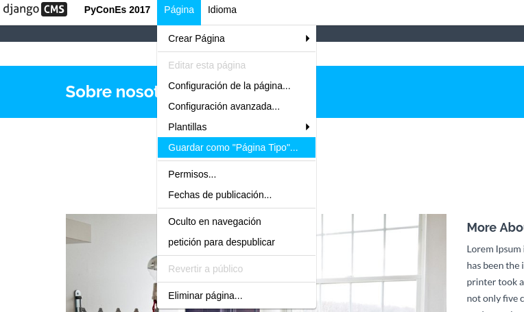

Páginas tipo
Las página tipo facilitan a los editores de contenido la creación de páginas a partir de otras páginas ya definidas.
Las "páginas tipo" tienen contenido como plugins que se copiarán a la página recién creada.
-
Primero crearemos una nueva página de la forma habitual; esto se convertirá en la plantilla para tu nueva página tipo.
-
Utilizaremos esta página como nuestra plantilla para agregar contenido de ejemplo y plugins hasta dejarla como queramos.
-
Cuando lo tengamos como queremos, seleccionaremos Guardar como tipo de página... en el menú Página y le daremos un nombre que nos permita distinguirla en el futuro.

- Podemos seguir cambiando su contenido y configuración en el futuro.

- Ya tendremos una nueva página tipo que tendremos disponible desde Agregar página y el cuadro de diálogo Crear.